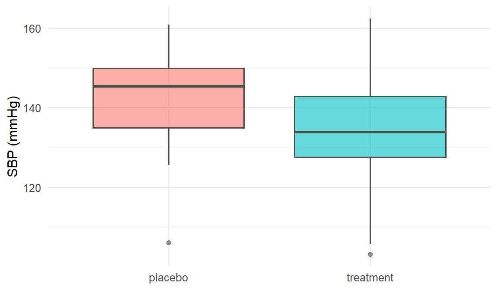
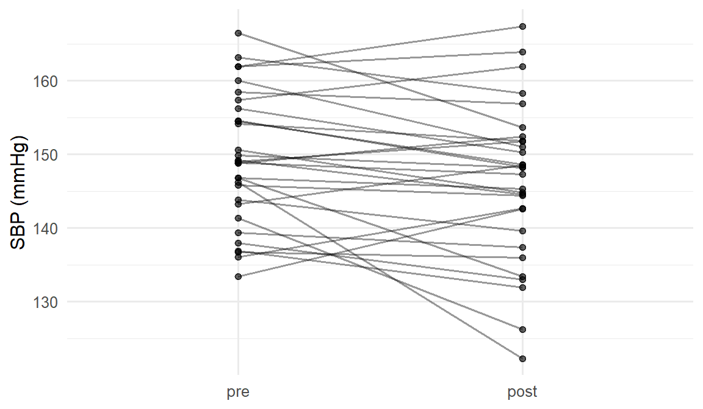
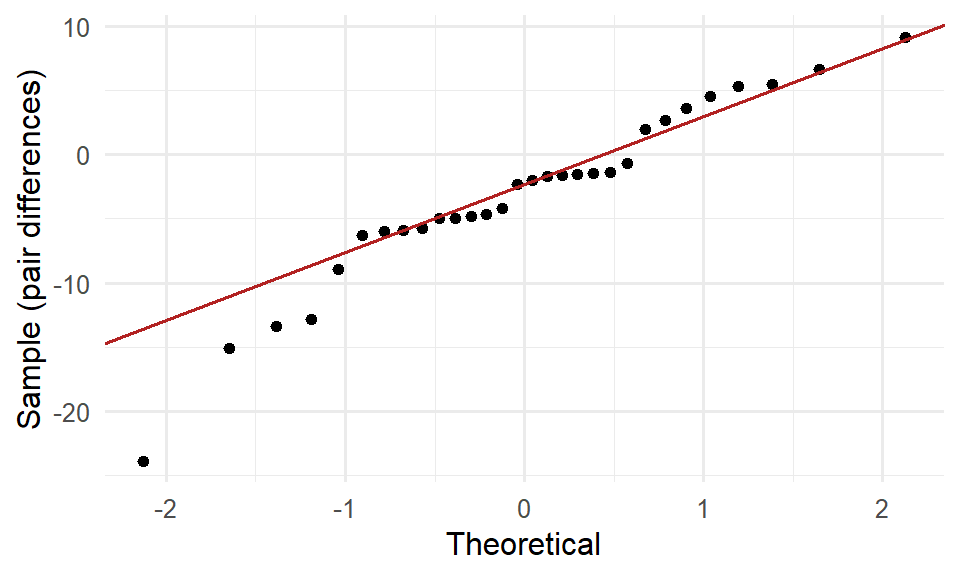

library(tidyverse)
library(effectsize)
set.seed(42)
theme_set(theme_minimal(base_size = 12))Week 4, Session 1 — Two-sample and paired t-tests
Course 1 — Biostatistics Courses
Note
Inference labs use the five-step template: Hypothesis → Visualise → Assumptions → Conduct → Conclude.
Learning objectives
- Choose between Student’s and Welch’s t-test, and between paired and independent-samples tests.
- Compute Cohen’s d and Hedges’ g as effect sizes.
- Report a two-sample comparison with point estimate, CI, and effect size.
Prerequisites
Lab 3.4.
Background
The two-sample t-test compares the means of two independent groups. Student’s version assumes equal variances across the groups; Welch’s does not. In most applied settings Welch’s is the safer default — it behaves nearly as well as Student’s when variances are actually equal and much better when they are not. The t.test() default in R is Welch.
When the same subjects are measured twice, the samples are paired and the two measurements are correlated. Ignoring the pairing inflates the standard error and lowers power. Pairing is handled by computing the within-subject difference and running a one-sample t-test on it.
Effect sizes remove units from the comparison. Cohen’s d is the standardised mean difference: the mean difference divided by the pooled standard deviation. Hedges’ g applies a small-sample correction. Both are essential alongside a p-value — a large d at a small n will often produce a non-significant p, but the d is still a warning that a larger study might find a real effect.
Setup
1. Hypothesis
Scenario A (independent): mean systolic blood pressure in treatment vs placebo.
- H0: μ_trt = μ_pla, H1: μ_trt ≠ μ_pla, α = 0.05.
Scenario B (paired): SBP before and after a four-week intervention in the same 30 patients.
- H0: mean within-subject change = 0, H1: ≠ 0.
2. Visualise
n <- 40
trt <- rnorm(n, mean = 135, sd = 12)
pla <- rnorm(n, mean = 142, sd = 12)
df_ind <- tibble(
arm = rep(c("placebo", "treatment"), each = n),
sbp = c(pla, trt)
)df_ind |>
ggplot(aes(arm, sbp, fill = arm)) +
geom_boxplot(alpha = 0.6, colour = "grey30") +
labs(x = NULL, y = "SBP (mmHg)") +
theme(legend.position = "none")
n2 <- 30
pre <- rnorm(n2, 148, 10)
post <- pre - rnorm(n2, 5, 7) # true mean drop of 5
df_pair <- tibble(id = seq_len(n2), pre = pre, post = post) |>
mutate(delta = post - pre)df_pair |>
pivot_longer(c(pre, post), names_to = "time", values_to = "sbp") |>
mutate(time = factor(time, levels = c("pre", "post"))) |>
ggplot(aes(time, sbp, group = id)) +
geom_line(alpha = 0.4) +
geom_point(alpha = 0.6) +
labs(x = NULL, y = "SBP (mmHg)")
3. Assumptions
Independent t: approximate normality of the sample means; Welch’s does not require equal variances. Paired t: approximate normality of the within-subject differences.
df_pair |>
ggplot(aes(sample = delta)) +
stat_qq() + stat_qq_line(colour = "firebrick") +
labs(x = "Theoretical", y = "Sample (pair differences)")
4. Conduct
Two-sample (Welch)
tt_welch <- t.test(sbp ~ arm, data = df_ind, var.equal = FALSE)
tt_welch
Welch Two Sample t-test
data: sbp by arm
t = 2.9095, df = 72.3, p-value = 0.004807
alternative hypothesis: true difference in means between group placebo and group treatment is not equal to 0
95 percent confidence interval:
2.655371 14.209770
sample estimates:
mean in group placebo mean in group treatment
142.9581 134.5256 Two-sample Student (for comparison)
tt_student <- t.test(sbp ~ arm, data = df_ind, var.equal = TRUE)
tt_student
Two Sample t-test
data: sbp by arm
t = 2.9095, df = 78, p-value = 0.004715
alternative hypothesis: true difference in means between group placebo and group treatment is not equal to 0
95 percent confidence interval:
2.662545 14.202597
sample estimates:
mean in group placebo mean in group treatment
142.9581 134.5256 Paired
tt_paired <- t.test(df_pair$post, df_pair$pre, paired = TRUE)
tt_paired
Paired t-test
data: df_pair$post and df_pair$pre
t = -2.4747, df = 29, p-value = 0.01943
alternative hypothesis: true mean difference is not equal to 0
95 percent confidence interval:
-5.7941048 -0.5505107
sample estimates:
mean difference
-3.172308 Effect size
d_ind <- cohens_d(sbp ~ arm, data = df_ind)
g_ind <- hedges_g(sbp ~ arm, data = df_ind)
d_paired <- cohens_d(df_pair$post, df_pair$pre, paired = TRUE)
list(d_ind = d_ind, g_ind = g_ind, d_paired = d_paired)$d_ind
Cohen's d | 95% CI
------------------------
0.65 | [0.20, 1.10]
- Estimated using pooled SD.
$g_ind
Hedges' g | 95% CI
------------------------
0.64 | [0.20, 1.09]
- Estimated using pooled SD.
$d_paired
Cohen's d | 95% CI
--------------------------
-0.45 | [-0.82, -0.07]5. Concluding statement
Independent comparison. Mean SBP was 134.5 mmHg (SD 14.7) in the treatment arm and 143 (SD 11) in placebo. A Welch’s t-test gave t(72.3) = 2.91, p = 0.0048, mean difference 8.4 mmHg (95% CI -14.2 to -2.7). Cohen’s d = 0.65 (Hedges’ g = 0.64), a small-to-medium effect.
Paired comparison. The within-subject change (post − pre) had mean -3.2 mmHg (SD 7); paired t-test t(29) = -2.47, p = 0.019, 95% CI -5.8 to -0.6.
The effect size is the number that generalises. A p-value tells you whether to reject; d and its CI tell you how much.
Insist that students always look at the paired-difference Q-Q plot. The before/after line plot is pretty; the Q-Q plot is diagnostic.
Common pitfalls
- Running an independent-samples t on paired data and losing power.
- Reporting Student’s t in the era of Welch; there is rarely a good reason.
- Reporting p without d (or an equivalent effect size).
- Confusing effect size with statistical significance.
Further reading
- Delacre M et al. (2017). Why psychologists should by default use Welch’s t-test.
- Cohen J. Statistical Power Analysis for the Behavioral Sciences.
Session info
sessionInfo()R version 4.5.2 (2025-10-31 ucrt)
Platform: x86_64-w64-mingw32/x64
Running under: Windows 11 x64 (build 26200)
Matrix products: default
LAPACK version 3.12.1
locale:
[1] LC_COLLATE=English_Germany.utf8 LC_CTYPE=English_Germany.utf8
[3] LC_MONETARY=English_Germany.utf8 LC_NUMERIC=C
[5] LC_TIME=English_Germany.utf8
time zone: Europe/Berlin
tzcode source: internal
attached base packages:
[1] stats graphics grDevices utils datasets methods base
other attached packages:
[1] effectsize_1.0.2 lubridate_1.9.5 forcats_1.0.1 stringr_1.6.0
[5] dplyr_1.2.0 purrr_1.2.2 readr_2.2.0 tidyr_1.3.2
[9] tibble_3.3.1 ggplot2_4.0.3 tidyverse_2.0.0
loaded via a namespace (and not attached):
[1] sandwich_3.1-1 generics_0.1.4 stringi_1.8.7 lattice_0.22-9
[5] hms_1.1.4 digest_0.6.39 magrittr_2.0.4 evaluate_1.0.5
[9] grid_4.5.2 timechange_0.4.0 estimability_1.5.1 RColorBrewer_1.1-3
[13] mvtnorm_1.3-7 fastmap_1.2.0 Matrix_1.7-5 jsonlite_2.0.0
[17] survival_3.8-6 multcomp_1.4-30 scales_1.4.0 TH.data_1.1-5
[21] codetools_0.2-20 cli_3.6.5 rlang_1.2.0 splines_4.5.2
[25] withr_3.0.2 yaml_2.3.12 otel_0.2.0 tools_4.5.2
[29] datawizard_1.3.1 tzdb_0.5.0 coda_0.19-4.1 bayestestR_0.17.0
[33] vctrs_0.7.3 R6_2.6.1 zoo_1.8-15 lifecycle_1.0.5
[37] emmeans_2.0.3 htmlwidgets_1.6.4 MASS_7.3-65 insight_1.5.0
[41] pkgconfig_2.0.3 pillar_1.11.1 gtable_0.3.6 glue_1.8.0
[45] xfun_0.57 tidyselect_1.2.1 parameters_0.28.3 knitr_1.51
[49] xtable_1.8-8 farver_2.1.2 htmltools_0.5.9 labeling_0.4.3
[53] rmarkdown_2.31 compiler_4.5.2 S7_0.2.2